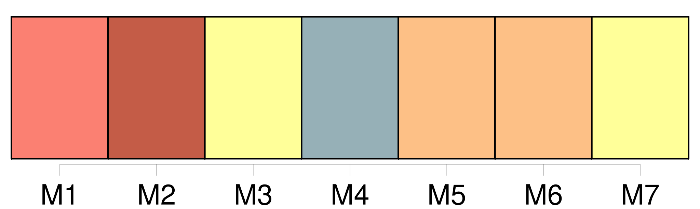
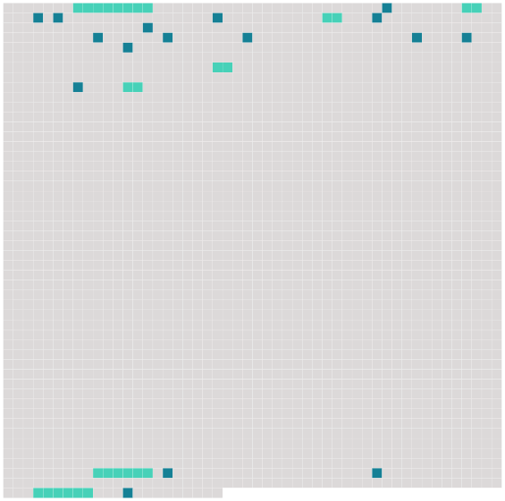

Longueur nb maillons : 23 mentions |
 |
La vieille gouvernante alla ouvrir, et [un homme au teint cuivré et richement vêtu] , mais selon une mode étrangère, avec un long poignard, se dessina sous les rayons de la lanterne de Barbara. [Son] premier mouvement fut la frayeur ; mais [l’ homme] la rassura, et lui [dit] qu’ [il] avait besoin de me voir sur-le-champ pour quelque chose qui concernait mon ministère. Barbara [le] fit monter. [1 phrases] [L’ homme] me dit que [sa] maîtresse, une très grande dame, était à l’ article de la mort et désirait un prêtre. Je répondis que j’ étais prêt à [le] suivre ; je pris avec moi ce qu’ il fallait pour l’ extrême-onction et je descendis en toute hâte. [1 phrases] [Il] me tint l’ étrier et m’ [aida] à monter sur l’ un, puis [il] sauta sur l’ autre en appuyant seulement une main sur le pommeau de la selle. [Il] serra les genoux et [lâcha] les guides à son cheval qui partit comme la flèche. Le mien, dont [il] tenait la bride, prit aussi le galop et se maintint dans une égalité parfaite. [2 phrases] Les aigrettes d’ étincelles que les fers de nos chevaux arrachaient aux cailloux laissaient sur notre passage comme une traînée de feu, et si quelqu’un, à cette heure de nuit, nous eût vus, [mon conducteur] et moi, il nous eût pris pour deux spectres à cheval sur le cauchemar. [2 phrases] Mais, quand [il] les voyait faiblir, [l’ écuyer] , pour les ranimer, poussait un cri guttural qui n’ avait rien d’ humain, et la course recommençait avec furie. [63 phrases] Barbara m’ a conté que [le même homme au teint cuivré] , [qui] m’ était venu chercher pendant la nuit, m’ avait ramené le matin dans une litière fermée et s’ en [était] retourné aussitôt. [2 phrases] Je ne pouvais croire que j’ avais rêvé, puisque Barbara avait vu comme moi [l’ homme aux deux chevaux noirs] et qu’ elle [en] décrivait l’ ajustement et la tournure avec exactitude. |
 |
Il est possible de télécharger la ressource sur la page Ortolang |
Si vous avez des questions ou vous voyez des erreurs, merci d'envoyer un mail à silvia.federzoni89@gmail.com |